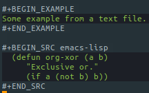

mode
Table of Contents
1 org mode
1.1 outline
1.1.1 Outlines
org is implemented on top of outline mode.
1.1.2 Visibility cycling
- Global and local cycling
Key Bounding Function Description TAB org-cycle rotate current subtree among the states (FOLDED, CHILDREN, SUBTREE). S-TAB org-gloable-cycle rotate the entire buffer among the states. M-n S-TAB (n is a no.) When S-TAB is called with a numeric prefix argument N, the CONTENTS view up to headlines of level N will be shown. C-u C-u TAB org-set-startup-visibility Switch back to the startup visibility of the buffer. C-u C-u C-u TAB outlien-show-all Show all, including drawers. C-c C-k outline-show-branches Show all subheadings of this heading, but not their bodies. C-c TAB outline-show-children Expose all direct children of the subtree. M-n C-c TAB expose all children down to level N. C-c C-x b org-tree-to-indirect-buffer Show the current subtree in a indirect buffer. M-n C-c C-x b go up to level N and then take that tree. - Initial visibility
When Emacs first visits an Org file, the global state is set to OVERVIEW,
i.e., only the top level headlines are visible.
This can be configured through the variableorg-startup-folded,
or on a per-file basis by adding one of the following lines anywhere in the buffer:
#+STARTUP: fold (or ‘overview’, this is equivalent) #+STARTUP: nofold (or ‘showall’, this is equivalent) #+STARTUP: content #+STARTUP: showeverything
- Catching invisible edits
org-catch-invisible-edits
1.1.3 Motion
| BOUND | FUNCTION |
| C-c C-n | org-next-visible-heading |
| C-c C-p | org-previous-visible-heading |
| C-c C-f | org-forward-same-level |
| C-c C-b | org-backward-same-level |
| C-c C-u | outline-up-heading |
| C-c C-j | org-goto |
1.1.4 Structure editing
Insert Operations:
| Key Bounding | Functions | Description | Config |
|---|---|---|---|
| M-RET | org-insert-heading | Insert a new heading with the same depth at point. | org-M-RET-may-split-line |
| C-RET | org-insert-heading-respect-content | Insert a new heading at the end of the current subtree. | org-insert-heading-respect-content |
| M-S-RET | org-insert-todo-heading | Insert new TODO entry with same level as current heading. | org-treat-insert-todo-heading-as-state-change |
| C-S-RET | org-insert-todo-heading-respect-content | Insert a new TODO entry at the end of the current subtree | org-insert-heading-respect-content |
| TAB | org-cycle | cycle the level of the headline by demoting and promoting it to likely levels. | org-cycle-level-after-item/entry-creation |
Promote, Demote, Up, Down Operations:
| Key Bounding | Functions | Description | Config |
|---|---|---|---|
| M-LEFT | org-do-promote | promote current heading by one level | |
| M-RIGHT | org-do-demote | demote current heading by one level | |
| M-S-LEFT | org-promote-subtree | promote the current subtree by one level | |
| M-S-RIGHT | org-demeote-subtree | demote the current subtree by one level | |
| M-UP | org-move-subtree-up | move subtree up | |
| M-DOWN | org-move-subtree-down | move subtree down |
Mark Operations:
| Key Bounding | Functions | Description |
|---|---|---|
| C-c @ | org-mark-subtree | Mark the subtree and point. Hitting repeatedly will mark subsequent subtree of the same level than the marked subtree. |
Cut, Copy, Past Operations: (prefix: C-c C-x)
| Key Bounding | Functions | Description |
|---|---|---|
| C-c C-x C-w | org-cut-subtree | Kill subtree, i.e., remove it from buffer but save in kill ring. With a numeric prefix argument N, kill N sequential subtrees. |
| C-c C-x M-w | org-copy-subtree | Copy subtree to kill ring. With a numeric prefix argument N, copy the N sequential subtrees. |
| C-c C-x C-y | org-paste-subtree | Yank subtree from kill ring. |
| C-c C-x c | org-clone-subtree-with-time-shift | Clone a subtree by making a number of sibling copies of it. |
Others:
| Key Bounding | Functions | Description |
| C-c C-w | org-refile | Refile entry or region to a different location. |
| C-c ^ | org-sort | Sort same-level entries. When there is an active region, all entries in the region will be sorted. Otherwise the children of the current headline are sorted. With a C-u prefix, sorting will be case-sensitive. |
| C-c * | org-toggle-heading |
Narrow: (n: narrow, s: subtree, b: block, w: widen)
| Key Bounding | Functions | Description |
| C-x n s | org-narrow-to-subtree | |
| C-x n b | org-narrow-to-block | |
| C-x n w | widen |
1.1.5 Sparse tress
| Key Bounding | Functions | Description |
|---|---|---|
| C-c / | org-sparse-tree | Construct sparse trees from selected information in an outline tree. |
1.1.6 Plain list
Org knows ordered lists, unorderded lists, and description lists.
- 'unordered' list start with '-' or '+' as bullets.
- 'ordered' list items star with a number followed by either a period or a right parenthesis.
- 'description' list items are unorderded list items, and contain the separator ' :: ' to distinguish the description.
If you find that using a different bullet for a sub-list improves readability, customize the variable "org-list-demote-modify-bullet" .
To get a greater difference of indentation between items and their sub-items, customize "org-list-indent-offset" .
| Key Bound | Function | Description |
|---|---|---|
| M-RET | org-insert-item | Insert new item in current level. |
| M-S-RET | org-insert-todo-heading | Insert a new item with an unchecked check box. |
| S-UP | org-previous-item | Jump to the previous item in the current list. |
| S-DOWN | org-next-item | Jump to the next item in the current list. |
| M-UP | org-move-item-up | |
| M-DOWN | org-move-item-down | |
| M-S-LEFT | org-outdent-item-tree | |
| M-S-RIGHT | org-indent-item-tree | |
| C-c ^ | org-sort-list | |
| C-c - | org-toggle-item/org-cycle-list-bullet |
1.1.7 Blocks
Org mode uses begin…end blocks for various purposes from including source code examples to capturing time logging information.

These blocks can be folded and unfolded by pressing <TAB> in the begin line.
You can also get all blocks folded at startup by configuring the option "org-hide-block-startup" or on a per-file basis by using
#+STARTUP: hideblocks #+STARTUP: nohideblocks
1.1.8 Footnote
A footnote is started by a footnote marker in square brackets in column 0, no indentation allowd.
For example:
The Org homepage[fn:1] now looks a lot better than it used to. ... [fn:1] The link is: https://orgmode.org
Org mode extends the number-based syntax to "named" footnotes and optional inline definition.
[fn:name] [fn:name:a definition] [fn::a definition]
C-c C-x f
org-footnote-action
When at a footnote reference, jump to the definition.
When at a definition, jump to the references if they exist, offer to create them otherwise.
When neither at definition or reference, create a new footnote, interactively.
With prefix, offer additional commands in a menu. (C-u C-c C-x f)
1.2 date and time
The specially formatted string carrying the date and/or time information is called a timestamp in Org mode.
1.2.1 Timestamps
- Plain timestamp
<2016-11-01 Wed 19:15> <2006-11-02 Thu 20:00-22:00>
- Timestamp with repeater interval
It applies not only on the given date, but again and again after a certain interval of
N days(d), weeks(w), months(m), or years(y).
<2007-05-16 Wed 12:30 +1w>
- Time/Date range
<2004-08-23 Mon>--<2004-08-26 Thu>
- Inactive timestamp
These timestamp are inactive in the sense that they do not trigger an entry to show up in the agenda.
[2006-11-01 Wed]
1.2.2 Creating timestamps
| Key Bound | Functions | Description |
|---|---|---|
| C-c . | org-time-stamp | Prompt for a date and insert a corresponding timestamp. When this command is used twice in succession, a time range is inserted. |
| C-c ! | org-time-stamp-inactive | Insert a inactive timestamp. |
| C-c < | org-date-from-calendar | Insert a timestamp corresponding to the cursor date in the Calendar. |
| C-c > | org-goto-calendar | Access the Emacs calendar for the current date. If there is a timestamp in the current line, go to the corresponding date instead. |
| C-c C-o | org-open-at-point | Open link, timestamp, footnote or tags at point. |
| S-LEFT | org-timestamp-down-day | |
| S-RIGHT | org-timestamp-up-day | |
| S-UP | org-timestamp-up | Change the item under the cursor in a timestamp. The cursor can be on bracket, year, month, day, hour or minute. |
| S-DOWN | org-timestamp-down | |
| C-c C-y | org-evaluate-time-range | Evaluate a time range by computing the difference between start and end. |
1.2.3 Deadlines and scheduling
A timestamp may be preceded by special keywords to facilitate planning.
Both the timestamp and the keyword have to be positioned immediately after the task they refer to.
- DEADLINE
Meaning: the task is supposed to be finished on that date.
In addition, the agenda for today will carry a warning about
the approaching or missed deadline, startingorg-deadline-warning-days
before the due date, and continuing until the entry is marked DONE.
*** TODO write article about the Earth for the Guide DEADLINE: <2004-02-29 Sun> - SCHEDULED
Meaning: you are planning to start working on that task on the given date.
*** TODO Call Trillian for a date on New Years Eve. SCHEDULED: <2004-12-25 Sat>org-scheduled-delay-days
org-agenda-skip-scheduled-delay-if-deadline
- Inserting deadline/schedule
Key Bounding Function Description Prefix Config C-c C-d org-deadline Insert DEADLINE keyword along with a stamp. An existing deadline will be removed from the entry. org-deadline-warning-days, org-log-redeadline C-c C-s org-schedule Insert SCHEDULED keyword along with a stamp. An existing scheduling will be removed from the entry. org-scheduled-delay-days, org-agenda-skip-scheduled-delay-if-deadline, org-log-reschedule - Repeated tasks
Variable Description org-log-repeat record moving through the DONE state when triggering repeat. If you need both a repeater and a special warning period,
the repeater should come first and the warning period last:
Symbol Description + shift a exact time repeater - delay ++ shift at least a time repeater .+ shift to next time repeater ** TODO Call Father DEADLINE: <2008-02-10 Sun ++1w> Marking this DONE will shift the date by at least one week, but also by as many weeks as it takes to get this date into the future. However, it stays on a Sunday, even if you called and marked it done on Saturday. ** TODO Empty kitchen trash DEADLINE: <2008-02-08 Fri 20:00 ++1d> Marking this DONE will shift the date by at least one day, and also by as many days as it takes to get the timestamp into the future. Since there is a time in the timestamp, the next deadline in the future will be on today's date if you complete the task before 20:00. ** TODO Check the batteries in the smoke detectors DEADLINE: <2005-11-01 Tue .+1m> Marking this DONE will shift the date to one month after today.
1.3 todo
Org mode does not maintain TODO lists as separate documents. Instead, TODO items are an integral part of the notes file, because TODO items usually come up while taking notes!
1.3.1 Todo basics
Any headline become a TODO item when it starts with the word 'TODO'.
C-c C-t (org-todo)
rotate the TODO state of the current item (ummarked, TODO, DONE)
S-right S-left
Select the following/preceding TODO state, similar to cycling.
C-c / t (org-show-todo-tree)
View TODO items in a sparse tree.
M-S-RET (org-insert-todo-heading)
Insert a new TODO entry below the current one.
C-S-RET (org-insert-todo-heading-respect-content)
1.3.2 Todo extensions
By default, marked TODO entries have one of only two states: TODO and DONE.
Org mode allows you to classify TODO items in more complex ways with TODO keywords (org-todo-keywords).
- Todo keywords as workflow states
You can use TODO keywords to indicate different sequential states in the process of working on an item, for example:
(setq org-todo-keywords '((sequence "TODO" "FEEDBACK" "VERIFY" "|" "DONE" "DELEGATED")))
The vertical bar separates the TODO keywords (states that need action)
from the DONE states (which need no further action). If you don't provide
the separator bar, the last state is used as DONE state. With this step,
the command C-c C-t will cycle an entry from TODO to FEEDBACK, then
VERIFY, and finally to DONE and DELEGATED.
- Todo keyworks as types
(setq org-todo-keywords '((type "Fred" "Hack" "Lucy" "|" "DONE")))
In this case, different keywords do not indicate a sequence, but rather different types.
So the normal work flow would be to assign a task to a person, and later to mark it DONE.
- Multiple keywords sets in one file
(setq org-todo-keywords '((sequence "TODO" "|" "DONE") (sequence "REPORT" "BUG" "KNOWNCAUSE" "|" "FIXED") (sequence "|" "CANCELED")))
In this setup, C-c C-t only operates within a subsequence.
C-u C-u C-c C-t
C-S-right
C-S-left
These keys jump from one TODO subset to the next.
S-right
S-left
Walk through all keywords from all sets.
- Fast access to TODO states
If you would like to quickly change an entry to an arbitrary TODO state instead of cycling through the states,
you can set up keys for single-letter access to the states.
(setq org-todo-keywords '((sequence "TODO(t)" "|" "DONE(d)") (sequence "REPORT(r)" "BUG(b)" "KNOWNCAUSE(k)" "|" "FIXED(f)") (sequence "|" "CANCELED(c)")))
If you then press
C-c C-tfollowed by the selection key, the entry will be switched to this state.
- Setting up keywords for individual files
It can be very useful to use different aspects of the TODO mechanism in different files.
You need one of the following lines anywhere in the file:
#+TODO: TODO FEEDBACK VERIFY | DONE CANCELED
(you may also write #+SEQ_TODO to be explicit about the interpretation, but it means the same as #+TODO), or
#+TYP_TODO: Fred Hack Lucy | DONE
Several sets in parallel:
#+TODO: TODO | DONE #+TODO: REPORT BUG KNOWNCAUSE | FIXED #+TODO: | CANCELED
To make sure you are using the correct keyword, type ‘#+’ into the buffer and then use C-M-i completion.
After changing one of these lines, use C-c C-c with the cursor still in the line to make the changes known to Org mode.
- Faces for TODO keywords
Org mode highlights TODO keywords with special faces:
org-todofor keywords indicating that an item still has to be acted upon,
andorg-donefor keywords indicating that an item is finished.
If you are using more than 2 different states, you might want to use special faces for some of them.
(setq org-todo-keyword-faces '(("TODO" . org-warning) ("STARTED" . "yellow") ("CANCELED" . (:foreground "blue" :weight bold))))
- Todo dependencies
The structure of Org files (hierarchy and lists) makes it easy to define TODO dependencies.
org-enforce-todo-dependencies
Non-nil means undone TODO entries will block switching the parent to DONE.
Also, if a parent has an :ORDERED: property, switching an entry to DONE will
be blocked if any prior sibling is not yet done.
C-c C-x o org-toggle-ordered-property Toggle the ORDERED property of the current entry C-u C-u C-u C-c C-t Change TODO state, circumventing anying state blocking
1.3.3 Progress logging
Org mode can automatically record a timestamp and possibly a note
when you mark a TODO item as DONE, or even each time you change
the state of a TODO item.
- Closing items
The most basic logging is to keep track of when a certain TODO item was finished.
(setq org-log-done 'time)Then each time you turn an entry from a TODO (not-done) state
into any of the DONE states, a line ‘CLOSED: [timestamp]’ will
be inserted just after the headline.
- Tracking TODO state changes
To keep track of when a state change occurred and maybe take a note about this change:
(setq org-todo-keywords '((sequence "TODO(t)" "WAIT(w@/!)" "|" "DONE(d!)" "CANCELED(c@)))
Since it is normally too much to record a note for every state,
Org mode expects configuration on a per-keyword basis for this.
This is achieved by adding special markers ‘!’ (for a timestamp)
or ‘@’ (for a note with timestamp) in parentheses after each keyword.
To record a timestamp without a note for TODO keywords configured with ‘@’,
just type C-c C-c to enter a blank note when prompted.
The setting for WAIT is even more special:
the ‘!’ after the slash means that in addition to the note taken when entering the state,
a timestamp should be recorded when leaving the WAIT state,
if and only if the target state does not configure logging for entering it.
In order to define logging settings that are local to a subtree or a single item,
define a LOGGING property in this entry.
enter :P C-M-i
put the cursor on property line, press C-c C-c
When taking a lot of notes, you might want to get the notes out of the way into a drawer.
Customizeorg-log-into-drawerto get this behavior — the recommended drawer for this is called LOGBOOK.
You can also overrule the setting of this variable for a subtree by setting a LOG_INTO_DRAWER property
1.3.4 Priorities
Prioritizing can be done by placing a 'priority cookie' into the headline item.
*** TODO [#A] Write letter to Sam Fortune
By default, Org mode supports three priorities: ‘A’, ‘B’, and ‘C’.
‘A’ is the highest priority.
An entry without a cookie is treated just like priority ‘B’.
/C-c ,/ (org-priority)
Set the priority of the current headline.
S-up
S-down
Increase/decrease priority of current headline.
1.3.5 Breaking down tasks
Break down large tasks into smaller, manageable subtasks by
creating an outline tree below a TODO item,
with detailed subtasks on the tree.
To keep the overview over the fraction of subtasks that are already completed,
insert either ‘[/]’ or ‘[%]’ anywhere in the headline.
These cookies will be updated each time the TODO status of a child changes,
or when pressing C-c C-c on the cookie
* TODO Organize Party [33%] ** TODO Call people [1/2] *** TODO Peter *** DONE Sarah ** TODO Buy food ** DONE Talk to neighbor
If you would like to have the statistics cookie count any TODO entries in the subtree (not just direct children),
configure org-hierarchical-todo-statistics.
To do this for a single subtree, include the word ‘recursive’ into the value of the COOKIE_DATA property.
* Parent capturing statistics [2/20] :PROPERTIES: :COOKIE_DATA: todo recursive :END:
If you would like a TODO entry to automatically change to DONE when all children are done.
(defun org-summary-todo (n-done n-not-done) "Switch entry to DONE when all subentries are done, to TODO otherwise." (let (org-log-done org-log-states) ; turn off logging (org-todo (if (= n-not-done 0) "DONE" "TODO")))) (add-hook 'org-after-todo-statistics-hook 'org-summary-todo)
To keep subtasks out of the global TODO list, customize org-agenda-todo-list-sublevels.
1.3.6 Checkboxes
Checkboxes are not included in the global TODO list,
so they are often great to split a task into a number of simple steps.
* TODO Organize party [2/4]
- [-] call people [1/3]
- [ ] Peter
- [X] Sarah
- [ ] Sam
- [X] order food
- [ ] think about what music to play
- [X] talk to the neighbors
In a headline, a cookie can count either checkboxes below the heading or
TODO states of children, and it will display whatever was changed last.
Set the property COOKIE_DATA to either ‘checkbox’ or ‘todo’ to resolve this issue.
C-c C-c (org-toggle-checkbox)
Toggle checkbox status.
With a single prefix argument, add an empty checkbox or remove the current one.
With a double prefix argument, set it to ‘[-]’, which is considered to be an intermediate state.
C-c C-x C-b (org-toggle-checkbox)
Can work on region.
M-S-RET (org-insert-todo-heading)
Insert a new item with a checkbox.
C-c C-x o (org-toggle-ordered-property)
Toggle the ORDERED property of the current entry.
C-c # (org-update-statistics-cookies)
Update the statistics cookie, either from TODO or from checkboxes.
When called with a C-u prefix, update the entire file.
Don't need to put the cursor on the cookie.
1.4 tag
An excellent way to implement labels and context for cross-corrlating information is to assign tags to headlines.
Tags are normal words containing letters, numbers, '_', and '@'.
Tags must be preceded and followd by a single colon, e.g., ':work:'.
Several tags can be specified, as in ':work:urgent:'.
Tags will by default be in bold face with the same color as the headline. (org-tag-faces)
1.4.1 Tag inheritance
Tags make use of the hierarchical (/,haier 'ro: kikl/) structure of outline trees.
If a heading has a certain tag, all subheadings will inherit the tag as well.
* Meeting with the French group :work: ** Summary by Frank :boss:notes: *** TODO Prepare slides for him :action:
The final heading will have the tags ‘:work:’, ‘:boss:’, ‘:notes:’, and ‘:action:’ .
You can also set tags that all entries in a file should inherit just as
if these tags were defined in a hypothetical level zero that surrounds the entire file.
#+FILETAGS: :Peter:Boss:Secret:
| Variable |
|---|
| org-tags-exclude-from-inheritance |
| org-use-tag-inheritance |
1.4.2 Setting tags
| Key Chord | Functions | Description | Variable |
|---|---|---|---|
| C-c C-q | org-set-tags-command | Enter new tags for the current headline. | org-tags-column |
- a hard list of tags
Org supports tag insertion based on a list of tags.
By default this is a constructed dynamically, containing all tags used in the buffer.
You can set the default tags for a given file with the TAGS option.
#+TAGS: @work @home @tennisclub #+TAGS: laptop car pc sailboat
Variable Description org-tag-alist If you have set this, but would like to use a dynamic tag list in a specific file, add empty TAGS option line to that file. - a persistent hard list of tags
Variable Description org-tag-alist If you want to use a set of tags in every file, in addition to those defined on a per-file basis by TAGS option lines. You can turn this off on a per-file basis by adding a #+STARTUP option line
#+STARTUP: noptag
- fast tag selection
For every file in a step:
(setq org-tag-alist '(("@work" . ?w) ("@home" . ?h) ("laptop" . ?l)))
For a specific file:
#+TAGS: @work(w) @home(h) @tennisclub(t) laptop(l) pc(p)
- with newline
#+TAGS: @work(w) @home(h) @tennisclub(t) \n laptop(l) pc(p)
or
#+TAGS: @work(w) @home(h) @tennisclub(t) #+TAGS: laptop(l) pc(p)
or
(setq org-tag-alist '(("@work" . ?w) ("@home" . ?h) ("laptop" . ?l) (:newline . nil) ("laptop" . ?l) ("pc" . ?p)))
- with group
Selecting a tag in a group of mutually (/'mju: tchuer li/) exclusive tags will turn off any other tags from that group.
#+TAGS: { @work(w) @home(h) @tennisclub(t) } laptop(l) pc(p)or
(setq org-tag-alist '((:startgroup . nil) ("@work" . ?w) ("@home" . ?h) ("@tennisclub" . ?t) (:endgroup . nil) ("laptop" . ?l) ("pc" . ?p)))
- with newline
1.5 properites and columns
A property is a key-value pair associated with an entry.
Keys are case-insensitive.
Properties can be conveniently edited and viewed in column view.
1.5.1 Property syntax
* CD collection
** Classic
*** Goldberg Variations
:PROPERTIES:
:Title: Goldberg Variations
:Composer: J.S. Bach
:Artist: Glen Gould
:Publisher: Deutsche Grammophon
:NDisks: 1
:END:
You may define the allowed values for a particular property ‘:Xyz:’ by setting a property ‘:Xyz_ALL:’.
This special property is inherited, so if you set it in a level 1 entry, it will apply to the entire tree.
* CD collection :PROPERTIES: :NDisks_ALL: 1 2 3 4 :Publisher_ALL: "Deutsche Grammophon" Philips EMI :END:
If you want to set properties that can be inherited by any entry in a file, use a line like
#+PROPERTY: NDisks_ALL 1 2 3 4
If you want to add to the value of an existing property, append a + to the property name.
The following results in the property var having the value “foo=1 bar=2”.
#+PROPERTY: var foo=1 #+PROPERTY: var+ bar=2
| Key Bounding | Functions | Description |
|---|---|---|
| C-c C-x p | org-set-property | Set a property |
| C-c C-c | org-property-action | With the cursor in a property drawer, this executes property commands. |
| S-LEFT | Switch property at point to the previous allowed value. | |
| S-RIGHT | Switch property at point to the next allowed value. |
| Variable | Description |
|---|---|
| org-use-property-inheritance | Determine the property inheritance. |
| org-global-properties | Property values can be inherited by all entries. |
1.5.2 Special properties
Special properties provide an alternative access method to Org mode features.
This interface exists so that you can include these states in a column view, or to use them in queries.
The following property names are special and should not be used as keys in the properties drawer:
ALLTAGS All tags, including inherited ones. BLOCKED "t" if task is currently blocked by children or siblings. CLOCKSUM The sum of CLOCK intervals in the subtree. org-clock-sum must be run first to compute the values in the current buffer. CLOCKSUM_T The sum of CLOCK intervals in the subtree for today. org-clock-sum-today must be run first to compute the values in the current buffer. CLOSED When was this entry closed? DEADLINE The deadline time string, without the angular brackets. FILE The filename the entry is located in. ITEM The headline of the entry. PRIORITY The priority of the entry, a string with a single letter. SCHEDULED The scheduling timestamp, without the angular brackets. TAGS The tags defined directly in the headline. TIMESTAMP The first keyword-less timestamp in the entry. TIMESTAMP_IA The first inactive timestamp in the entry. TODO The TODO keyword of the entry.
1.5.3 Property inheritance
Org does not turn property inheritance on by default.
| Variable |
|---|
| org-use-property-inheritance |
Org mode has a few properties for which inheritance is hard-coded, at least for the special applications for which they are used:
COLUMNS CATEGORY ARCHIVE LOGGING
1.5.4 Column view
A great way to view and edit properties is column view.
In column view, each outline node is turned into a table row.
Columns in this table provide access to properties of the entries.
Org mode implements columns by overlaying a tabular structure over the headline of each item.
- Defining columns
Setting up a column view first requires defining the columns.
Variable org-columns-default-format - Scope of column definitions
To define a column format for an entire file, use a line like
#+COLUMNS: %25ITEM %TAGS %PRIORITY %TODO
To specify a format that only applies to a specific tree, add a :COLUMNS: property to the top node of that tree, for example:
** Top node for columns view :PROPERTIES: :COLUMNS: %25ITEM %TAGS %PRIORITY %TODO :END:
If a :COLUMNS: property is present in an entry, it defines columns for the entry itself, and for the entire subtree below it.
- Column attributes
A column definition sets the attributes of a column. The general definition looks like this:
%[width]property[(title)][{summary-type}]Except for the percent sign and the property name, all items are optional.
The individual parts have the following meaning:
width An integer specifying the width of the column in characters. If omitted, the width will be determined automatically. property The property that should be edited in this column. Special properties representing meta data are allowed here as well title The header text for the column. If omitted, the property name is used. {summary-type} The summary type. If specified, the column values for parent nodes are computed from the children. Supported summary types are: {+} Sum numbers in this column. {+;%.1f} Like ‘+’, but format result with ‘%.1f’. {$} Currency, short for ‘+;%.2f’. {min} Smallest number in column. {max} Largest number. {mean} Arithmetic mean of numbers. {X} Checkbox status, ‘[X]’ if all children are ‘[X]’. {X/} Checkbox status, ‘[n/m]’. {X%} Checkbox status, ‘[n%]’. {:} Sum times, HH:MM, plain numbers are hours. {:min} Smallest time value in column. {:max} Largest time value. {:mean} Arithmetic mean of time values. {@min} Minimum age (in days/hours/mins/seconds). {@max} Maximum age (in days/hours/mins/seconds). {@mean} Arithmetic mean of ages (in days/hours/mins/seconds). {est+} Add ‘low-high’ estimates.Example:
:COLUMNS: %25ITEM %9Approved(Approved?){X} %Owner %11Status %10Time_Estimate{:} %CLOCKSUM %CLOCKSUM_T :Owner_ALL: Tammy Mark Karl Lisa Don :Status_ALL: "In progress" "Not started yet" "Finished" "" :Approved_ALL: "[ ]" "[X]"
- Scope of column definitions
- TODO Using column view
- Turning column view on and off
Key Bounding Functions Description C-c C-x C-c org-columns Turn on clumn view. Core: org-columns-map (variable) | ! : 33 | " : 34 | # : 35 | $ : 36 | % : 37 | & : 38 | ' : 39 | ( : 40 | ) : 41 | * : 42 | | + : 43 | , : 44 | - : 45 | . : 46 | / : 47 | 0 : 48 | 1 : 49 | 2 : 50 | 3 : 51 | 4 : 52 | | 5 : 53 | 6 : 54 | 7 : 55 | 8 : 56 | 9 : 57 | : : 58 | ; : 59 | < : 60 | = : 61 | > : 62 | | ? : 63 | @ : 64 | A : 65 | B : 66 | C : 67 | D : 68 | E : 69 | F : 70 | G : 71 | H : 72 | | I : 73 | J : 74 | K : 75 | L : 76 | M : 77 | N : 78 | O : 79 | P : 80 | Q : 81 | R : 82 | | S : 83 | T : 84 | U : 85 | V : 86 | W : 87 | X : 88 | Y : 89 | Z : 90 | [ : 91 | \ : 92 | | ] : 93 | ^ : 94 | _ : 95 | ` : 96 | a : 97 | b : 98 | c : 99 | d : 100 | e : 101 | f : 102 | | g : 103 | h : 104 | i : 105 | j : 106 | k : 107 | l : 108 | m : 109 | n : 110 | o : 111 | p : 112 | | q : 113 | r : 114 | s : 115 | t : 116 | u : 117 | v : 118 | w : 119 | x : 120 | y : 121 | z : 122 | | { : 123 | | : 124 | } : 125 | ~ : 126 |Key Bounding Functions Description Mode & Cursor r/g org-columns-redo Construct the column display again. On column view line (all the below) q org-column-quit Exit column view 0..9 Directly select the Nth allowed value, 0 select the 10th value. n org-column-next-allowd-value Switch to the nextallowed value of the field. p org-column-previous-allowed-value Switch to the previous allowed value of the field. e org-column-edit-value Edit the property at point C-c C-c org-column-set-tags-or-toggle When there is a checkbox at point, toggle it. v org-columns-show-value View the full value of this property. a org-column-edit-allowed Edit the list of allowed values for this property. < org-column-narrow > org-column-widen M-S-RIGHT Insert a new column, to the left of the current column. M-S-LEFT org-column-delete Delete the current column.
- Turning column view on and off
1.6 typeface
| bold | hack |
| italic | hack |
| deleteline | |
| underline | hack |
| subscript | h_ack |
| superscript | h^ack |
| monospace | hack |
1.7 experience
1.7.1 mark push and pop
| C-c % | org-mark-ring-push | like "pushd" in linux |
| C-c & | org-mark-ring-goto | like "popd" in linux |
1.7.2 Add Table Title
#+caption: your-title
1.7.3 Split in Cell
M-RET
1.7.4 Add Horizontal Line
C-c -
2 latex mode
2.1 tex
TeX is a powerful text formatter written by Donald Knuth.
The TeX format has several variants.
Emacs provides a TeX major mode for each of theses variants.
| TeX | plain-tex-mode | |
| LaTeX | a simplified input format for TeX | latex-mode |
| DocTeX | a format in which the LaTeX sources are written, combining sources with documentation | doctex-mode |
| SliTeX | slitex-mode |
Emacs selects the appropriate mode by looking at the contents of the buffer.
(This is done by invoking the tex-mode command, which is normally called automatically when you visit a TeX-like file.)
If the contents are insufficient to determine this, Emacs chooses the mode specified by the variable tex-default-mode; its default value is latex-mode.
2.2 tex editing
In TeX mode, ‘$’ has a special syntax code which attempts to understand the way TeX math mode delimiters match.
| Bounding | Function | Description |
|---|---|---|
| C-c } | up-list | move forward out of one level of parentheses |
| " | tex-insert-quote | |
| M-RET | latex-insert-item | |
| C-c C-t | latex-insert-block | |
| C-c C-o | latex-insert-block | |
| C-c { | tex-insert-braces | |
| C-c C-u | tex-goto-last-unclosed-latex-block | |
| C-c C-e | latex-close-block | |
| C-c / | latex-close-block | |
| C-c ] | latex-close-block | |
| C-c C-s | latex-split-block | |
| C-c C-c | tex-compile | |
| C-c C-v | tex-view | |
| C-c C-l | tex-recenter-output-buffer | |
| C-RET | tex-feed-input | Send input to the tex shell process. |
In TeX, the character " is not normally used; instead, quotations begin with `` and end with ''.
TeX mode therefore binds the " key to the =tex-insert-quote- command.
This inserts `` after whitespace or an open brace, " after a backslash, and '' after any other character.
As a special exception, if you type " when the text before point is either `` or '', Emacs replaces that preceding text with a single " character.
TeX uses braces as delimiters that must match.
Use C-c { to insert a pair of braces. It leaves point between the two braces so you can insert the text that belongs inside.
Afterward, use the command C-c } to move forward past the close brace.
2.3 tex printing commands
| Bounding | Function | Description |
|---|---|---|
| C-c C-b | tex-buffer | Invoke TeX on the entire current buffer. |
| C-c C-r | tex-region | |
| C-c C-f | tex-file | |
| C-c C-v | tex-view | Preview the output from the last text-buffer, text-region or tex-file |
| C-c C-p | tex-print | Print the output from the last text-buffer, text-region or tex-file |
| C-c C-l | tex-recenter-output-buffer | Recenter the window showing output from TeX. |
| C-c C-k | tex-kill-job | Kill the TeX subprocess. |
| C-c C-c | tex-compile | Run a command CMD on current TeX buffer’s file in DIR. |
After the C-c C-v, a PEF view will show up, "q" to exit it and return back to Emacs.
Because most files of TeX input contain commands at the beginning to set parameters and define macros, without which no later part of the file will format correctly. To solve this problem, C-c C-r allows you to designate a part of the file as containing essential commands; it is included before the specified region as part of the input to TeX.
The designated part of the file is called the header.
To indicate the bounds of the header in Plain TeX mode, you insert two special strings in the file.
Insert ‘%**start of header’ before the header, and ‘%**end of header’ after it.
If ‘%**start of header’ does not appear within the first 100 lines of the buffer, C-c C-r assumes that there is no header.
In LaTeX mode, the header begins with ‘\documentclass’ or ‘\documentstyle’ and ends with ‘\begin{document}’.